In this chapter, I visually and numerically describe my sample and network. Below, you can find the descriptives and my interpretations, as well as the corresponding R code.
rm(list = ls()) # clean workspace
# custom functions
fpackage.check <- function(packages) {
lapply(packages, FUN = function(x) {
if (!require(x, character.only = TRUE)) {
install.packages(x, dependencies = TRUE)
library(x, character.only = TRUE)
}
})
}
fsave <- function(x, file = NULL, location = "./data/") {
ifelse(!dir.exists("data"), dir.create("data"), FALSE)
ifelse(!dir.exists("data"), dir.create("data"), FALSE)
if (is.null(file))
file = deparse(substitute(x))
datename <- substr(gsub("[:-]", "", Sys.time()), 1, 8)
totalname <- paste(location, datename, file, ".rda", sep = "")
save(x, file = totalname) #need to fix if file is reloaded as input name, not as x.
}
fload <- function(filename) {
load(filename)
get(ls()[ls() != "filename"])
}
fshowdf <- function(x, ...) {
knitr::kable(x, digits = 2, "html", ...) %>%
kableExtra::kable_styling(bootstrap_options = c("striped", "hover")) %>%
kableExtra::scroll_box(width = "100%", height = "300px")
}
packages = c("RSiena", "tidyverse", "stringdist", "stringi")
fpackage.check(packages)## Loading required package: RSiena## Warning: package 'RSiena' was built under R version 4.5.3## Loading required package: tidyverse## Warning: package 'tidyverse' was built under R version 4.5.3## Warning: package 'lubridate' was built under R version 4.5.3## ── Attaching core tidyverse packages ──────────────────────── tidyverse 2.0.0 ──
## ✔ dplyr 1.1.4 ✔ readr 2.1.6
## ✔ forcats 1.0.1 ✔ stringr 1.6.0
## ✔ ggplot2 4.0.0 ✔ tibble 3.3.0
## ✔ lubridate 1.9.5 ✔ tidyr 1.3.1
## ✔ purrr 1.2.0## ── Conflicts ────────────────────────────────────────── tidyverse_conflicts() ──
## ✖ dplyr::filter() masks stats::filter()
## ✖ dplyr::lag() masks stats::lag()
## ℹ Use the conflicted package (<http://conflicted.r-lib.org/>) to force all conflicts to become errors
## Loading required package: stringdist
##
##
## Attaching package: 'stringdist'
##
##
## The following object is masked from 'package:tidyr':
##
## extract
##
##
## Loading required package: stringi## Warning: package 'stringi' was built under R version 4.5.3## [[1]]
## NULL
##
## [[2]]
## NULL
##
## [[3]]
## NULL
##
## [[4]]
## NULL# NETWORK DEPENDENT ---------------------------------------------------------------
library(haven)
tnss_net <- read_sav("./data/TNSS_wave_2010_mentors.sav")
tnss_pup10 <- read_sav("./data/TNSS_wave_2010_pupils.sav")
tnss_pup11 <- read_sav("./data/TNSS_wave_2011_pupils.sav")
# using 'foreign' I got warnings and didn't seem to load well. 'haven' works nicely
view(tnss_net)
view(tnss_pup10)
view(tnss_pup11) # all looks good
class(tnss_net) # tibble/data frame## [1] "tbl_df" "tbl" "data.frame"class(tnss_pup10)## [1] "tbl_df" "tbl" "data.frame"class(tnss_pup11)## [1] "tbl_df" "tbl" "data.frame"#join datasets
# gaat automatisch goed gelukkig (obv IDClass en IDresp)
tnss <- left_join(tnss_net, tnss_pup10)## Joining with `by = join_by(IDClass, IDresp)`# view(tnss)
tnss_pup10 <- tnss_pup10 %>%
rownames_to_column(var = "id")
tnss_pup11 <- tnss_pup11 %>%
rownames_to_column(var = "id")
tnss_2waves <- left_join(tnss_pup10, tnss_pup11, by=c("id"))
# view(tnss_2waves)
#select class 5 (big class with few missings)
c5 <- tnss %>%
filter(IDClass == 5)
# for exploratory purposes, I also looked at class 3. But did not end up using this in my analyses
c3 <- tnss %>%
filter(IDClass == 3)
#aantal leerlingen in class 5
max(c5$order) # 28## [1] 28max(c3$order) # 27## [1] 27#vis het nominatienetwerk er uit. Nu beetje handwerk. Kan vast slimmer.
c5_net <- c5 %>%
select(fr_1:fr_28)
c3_net <- c3 %>%
select(fr_1:fr_27)
# view(c5_net)
class(c5_net) # tibble/data frame## [1] "tbl_df" "tbl" "data.frame"# view(c3_net)
net <- as.matrix(c5_net)
sum(diag(net) != 0)## [1] 0view(c5_net)
length(c5_net)## [1] 28net2 <- net
net2[1,2] <- 1
# BEHAVIORAL DEPENDENT ------------------------------------------------------------
id <- c5 %>%
dplyr::select("IDresp")
library(car)## Loading required package: carData
##
## Attaching package: 'car'
##
## The following object is masked from 'package:dplyr':
##
## recode
##
## The following object is masked from 'package:purrr':
##
## somehist(tnss_2waves$comfyEM)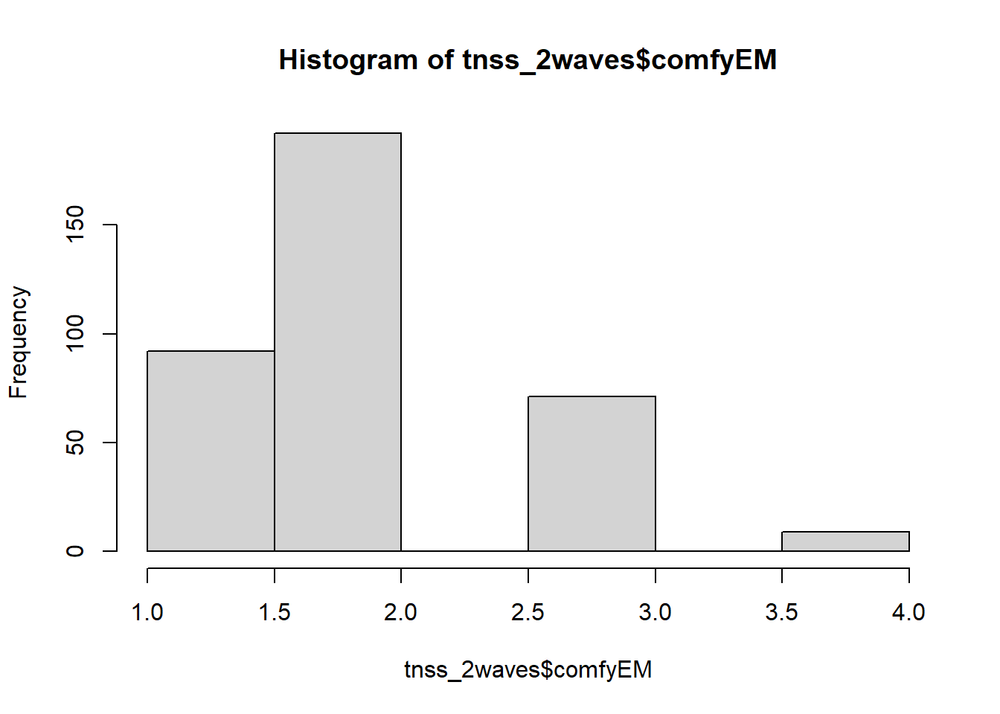
hist(tnss_2waves$comfyEM_2)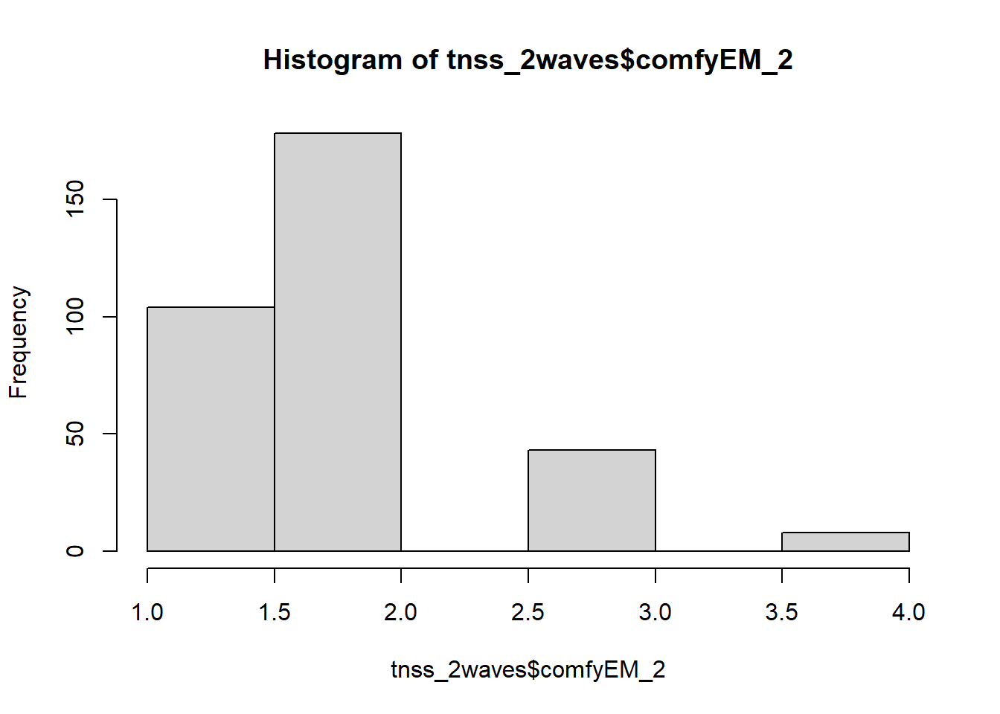
densityPlot(tnss_2waves$thermo_minority)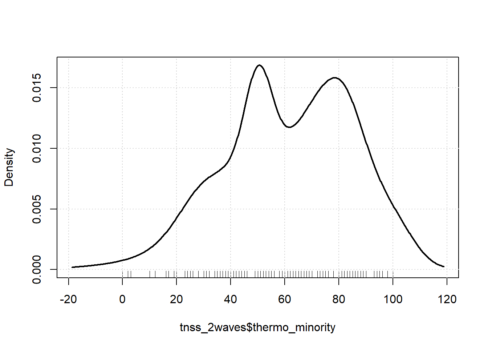
densityPlot(tnss_2waves$thermo_minority_2)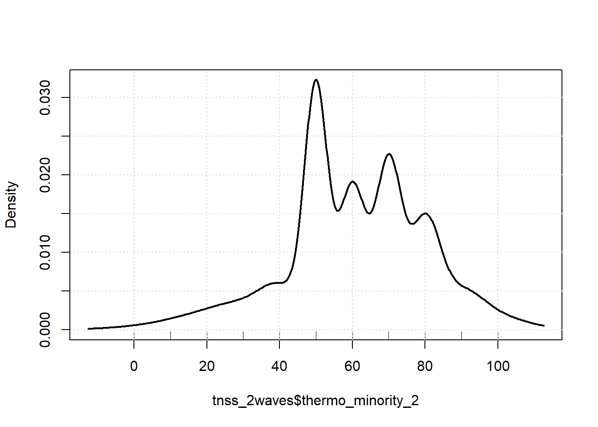
behy_pre <- tnss_2waves %>%
filter(IDresp.x %in% c5$IDresp) %>%
dplyr::select("IDresp.x", "thermo_minority", "thermo_minority_2") %>%
as.matrix() %>%
data.frame
id <- left_join(id, behy_pre, by=join_by(IDresp == IDresp.x) )
behy <- id %>% dplyr::select("thermo_minority", "thermo_minority_2") %>%
as.matrix()
behy## thermo_minority thermo_minority_2
## [1,] 20 50
## [2,] 44 50
## [3,] 65 30
## [4,] 63 70
## [5,] 65 20
## [6,] 50 80
## [7,] 52 30
## [8,] 10 50
## [9,] 50 70
## [10,] 72 50
## [11,] 100 50
## [12,] 50 70
## [13,] NA NA
## [14,] 84 60
## [15,] 26 80
## [16,] 100 50
## [17,] 75 50
## [18,] 60 50
## [19,] 50 80
## [20,] 86 60
## [21,] 30 50
## [22,] 98 50
## [23,] 41 100
## [24,] 39 80
## [25,] 2 50
## [26,] 90 100
## [27,] NA NA
## [28,] 10 60# SAMPLE DESCRIPTION
summary(tnss_pup10)## id IDresp IDClass Stud_year
## Length:364 Min. : 3.0 Min. : 1.000 Min. :1.000
## Class :character 1st Qu.:116.8 1st Qu.: 4.000 1st Qu.:1.000
## Mode :character Median :221.5 Median : 8.000 Median :1.000
## Mean :227.9 Mean : 8.069 Mean :1.481
## 3rd Qu.:344.2 3rd Qu.:12.000 3rd Qu.:2.000
## Max. :452.0 Max. :15.000 Max. :2.000
##
## gender kilo lang ethnicity_kid
## Min. :0.0000 Min. :33.00 Min. : 62.0 Length:364
## 1st Qu.:0.0000 1st Qu.:44.00 1st Qu.:159.0 Class :character
## Median :1.0000 Median :50.00 Median :165.0 Mode :character
## Mean :0.5027 Mean :50.54 Mean :164.1
## 3rd Qu.:1.0000 3rd Qu.:57.00 3rd Qu.:170.0
## Max. :1.0000 Max. :89.00 Max. :189.0
##
## ethnicity identit1 identit2 birth_kid
## Min. : 1.000 Min. :3.000 Min. :1.000 Min. :1.000
## 1st Qu.: 1.000 1st Qu.:4.000 1st Qu.:4.000 1st Qu.:1.000
## Median : 1.000 Median :5.000 Median :5.000 Median :1.000
## Mean : 3.212 Mean :4.602 Mean :4.343 Mean :1.132
## 3rd Qu.: 1.000 3rd Qu.:5.000 3rd Qu.:5.000 3rd Qu.:1.000
## Max. :99.000 Max. :5.000 Max. :5.000 Max. :6.000
##
## birth_kidother birth_kidother1 birth_moeder birth_moederother
## Length:364 Min. :1.00 Min. :1.000 Length:364
## Class :character 1st Qu.:2.75 1st Qu.:1.000 Class :character
## Mode :character Median :4.50 Median :1.000 Mode :character
## Mean :4.50 Mean :1.637
## 3rd Qu.:6.25 3rd Qu.:1.000
## Max. :8.00 Max. :7.000
## NA's :356
## birth_moederother1 birth_vader birth_vaderother birth_vaderother1
## Min. : 1.000 Min. :1.000 Length:364 Min. : 1.00
## 1st Qu.: 6.000 1st Qu.:1.000 Class :character 1st Qu.: 6.00
## Median : 6.000 Median :1.000 Mode :character Median : 7.50
## Mean : 7.452 Mean :1.709 Mean : 8.75
## 3rd Qu.: 9.000 3rd Qu.:1.000 3rd Qu.:12.00
## Max. :16.000 Max. :7.000 Max. :20.00
## NA's :333 NA's :332
## ethnic_back blijven bully1 bully2
## Min. :0.0000 Min. :0.0000 Min. :1.000 Min. :1.00
## 1st Qu.:0.0000 1st Qu.:0.0000 1st Qu.:1.000 1st Qu.:1.00
## Median :0.0000 Median :0.0000 Median :1.000 Median :1.00
## Mean :0.1813 Mean :0.1154 Mean :1.698 Mean :1.56
## 3rd Qu.:0.0000 3rd Qu.:0.0000 3rd Qu.:2.000 3rd Qu.:2.00
## Max. :1.0000 Max. :1.0000 Max. :6.000 Max. :6.00
##
## bully3 bully4 bully5 bully_ethnic
## Min. :1.000 Min. :1.000 Min. :1.000 Min. :1.000
## 1st Qu.:1.000 1st Qu.:1.000 1st Qu.:1.000 1st Qu.:1.000
## Median :1.000 Median :1.000 Median :1.000 Median :1.000
## Mean :1.242 Mean :1.212 Mean :1.176 Mean :1.607
## 3rd Qu.:1.000 3rd Qu.:1.000 3rd Qu.:1.000 3rd Qu.:1.000
## Max. :6.000 Max. :6.000 Max. :5.000 Max. :6.000
##
## bully_gender sexharasperpetrator racistperpetrator comfyEM
## Min. :1.000 Min. :1.000 Min. :1.00 Min. :1.000
## 1st Qu.:1.000 1st Qu.:1.000 1st Qu.:1.00 1st Qu.:1.000
## Median :1.000 Median :1.000 Median :1.00 Median :2.000
## Mean :1.915 Mean :1.269 Mean :1.14 Mean :1.992
## 3rd Qu.:2.000 3rd Qu.:1.000 3rd Qu.:1.00 3rd Qu.:2.000
## Max. :6.000 Max. :6.000 Max. :5.00 Max. :4.000
##
## comfyJ comfyM comfyNL educ_moeder
## Min. :1.000 Min. :1.000 Min. :1.000 Min. :1.000
## 1st Qu.:1.000 1st Qu.:1.000 1st Qu.:1.000 1st Qu.:5.000
## Median :2.000 Median :2.000 Median :1.000 Median :8.000
## Mean :1.662 Mean :1.571 Mean :1.297 Mean :6.986
## 3rd Qu.:2.000 3rd Qu.:2.000 3rd Qu.:2.000 3rd Qu.:9.000
## Max. :4.000 Max. :4.000 Max. :4.000 Max. :9.000
##
## educ_moederother educ_vader educ_vaderother eenzaam
## Length:364 Min. : 1.000 Length:364 Min. :1.000
## Class :character 1st Qu.: 6.000 Class :character 1st Qu.:1.000
## Mode :character Median : 8.000 Mode :character Median :1.000
## Mean : 7.195 Mean :1.604
## 3rd Qu.: 9.000 3rd Qu.:2.000
## Max. :10.000 Max. :5.000
##
## ongelukkig esteem1 esteem2 esteem3
## Min. :1.000 Min. :1.000 Min. :1.000 Min. :1.000
## 1st Qu.:1.000 1st Qu.:4.000 1st Qu.:4.000 1st Qu.:4.000
## Median :2.000 Median :4.000 Median :4.000 Median :4.000
## Mean :1.813 Mean :3.959 Mean :4.168 Mean :3.981
## 3rd Qu.:2.000 3rd Qu.:5.000 3rd Qu.:5.000 3rd Qu.:5.000
## Max. :5.000 Max. :5.000 Max. :5.000 Max. :5.000
##
## geloof_christian geloof_islam geloof1 geloof2
## Min. :1.000 Min. :1.00 Min. :0.0000 Min. :1.000
## 1st Qu.:1.000 1st Qu.:5.50 1st Qu.:0.0000 1st Qu.:1.000
## Median :7.000 Median :6.00 Median :0.0000 Median :1.000
## Mean :4.679 Mean :5.25 Mean :0.3132 Mean :1.404
## 3rd Qu.:7.000 3rd Qu.:6.00 3rd Qu.:1.0000 3rd Qu.:2.000
## Max. :7.000 Max. :7.00 Max. :1.0000 Max. :3.000
## NA's :283 NA's :344 NA's :250
## geloof3 gencontactEM gencontactJ gencontactM
## Min. :2.000 Min. :-5.000 Min. :-5.000 Min. :-5.000
## 1st Qu.:4.000 1st Qu.: 0.000 1st Qu.: 1.000 1st Qu.: 2.000
## Median :5.000 Median : 2.000 Median : 3.000 Median : 3.000
## Mean :4.541 Mean : 1.547 Mean : 2.593 Mean : 2.997
## 3rd Qu.:5.000 3rd Qu.: 4.000 3rd Qu.: 4.000 3rd Qu.: 4.000
## Max. :5.000 Max. : 5.000 Max. : 5.000 Max. : 5.000
##
## gencontactNL jongens_friends majority_friends meisjes_friends
## Min. :-5.000 Min. : 0.000 Min. : 0.000 Min. : 0.000
## 1st Qu.: 3.000 1st Qu.: 2.000 1st Qu.: 4.000 1st Qu.: 2.000
## Median : 4.000 Median : 5.000 Median : 7.000 Median : 5.000
## Mean : 3.467 Mean : 5.651 Mean : 8.588 Mean : 5.288
## 3rd Qu.: 5.000 3rd Qu.: 8.000 3rd Qu.:11.000 3rd Qu.: 8.000
## Max. : 5.000 Max. :25.000 Max. :28.000 Max. :25.000
##
## minority_friends ouders1 ouders10 ouders11
## Min. : 0.000 Min. :1.000 Min. :1.000 Min. :1.000
## 1st Qu.: 0.000 1st Qu.:4.000 1st Qu.:4.000 1st Qu.:1.000
## Median : 1.000 Median :4.000 Median :4.000 Median :1.000
## Mean : 1.745 Mean :4.162 Mean :3.819 Mean :1.206
## 3rd Qu.: 2.000 3rd Qu.:5.000 3rd Qu.:4.000 3rd Qu.:1.000
## Max. :25.000 Max. :5.000 Max. :4.000 Max. :4.000
##
## ouders2 ouders3 ouders4 ouders5 ouders6
## Min. :1.000 Min. :1.00 Min. :1.000 Min. :1.000 Min. :1.000
## 1st Qu.:3.000 1st Qu.:1.00 1st Qu.:1.000 1st Qu.:1.000 1st Qu.:1.000
## Median :4.000 Median :2.00 Median :1.000 Median :1.500 Median :2.000
## Mean :3.923 Mean :1.83 Mean :1.448 Mean :1.731 Mean :1.827
## 3rd Qu.:5.000 3rd Qu.:2.00 3rd Qu.:2.000 3rd Qu.:2.000 3rd Qu.:3.000
## Max. :5.000 Max. :5.00 Max. :4.000 Max. :4.000 Max. :4.000
##
## ouders7 ouders8 ouders9 ouders9a
## Min. :1.000 Min. :1.000 Min. :1.000 Min. :1.000
## 1st Qu.:1.000 1st Qu.:3.000 1st Qu.:3.000 1st Qu.:2.000
## Median :1.000 Median :4.000 Median :4.000 Median :2.000
## Mean :1.571 Mean :3.761 Mean :3.929 Mean :2.354
## 3rd Qu.:2.000 3rd Qu.:4.000 3rd Qu.:5.000 3rd Qu.:3.000
## Max. :4.000 Max. :5.000 Max. :5.000 Max. :5.000
##
## SaggrEM SaggrJ SaggrM SaggrNL
## Min. : 0.0 Min. : 0.00 Min. : 0.00 Min. : 0.00
## 1st Qu.: 30.0 1st Qu.: 33.50 1st Qu.: 10.00 1st Qu.: 23.25
## Median : 55.0 Median : 55.00 Median : 30.00 Median : 40.00
## Mean : 52.1 Mean : 51.23 Mean : 29.83 Mean : 39.78
## 3rd Qu.: 70.0 3rd Qu.: 70.00 3rd Qu.: 47.25 3rd Qu.: 52.00
## Max. :100.0 Max. :100.00 Max. :100.00 Max. :100.00
##
## SdisEM SdisJ SdisM SdisNL
## Min. : 0.00 Min. : 0.00 Min. : 0.00 Min. : 0.0
## 1st Qu.: 29.00 1st Qu.:30.00 1st Qu.: 30.00 1st Qu.: 30.0
## Median : 45.00 Median :45.00 Median : 50.00 Median : 50.0
## Mean : 44.87 Mean :43.43 Mean : 49.25 Mean : 45.4
## 3rd Qu.: 60.00 3rd Qu.:60.00 3rd Qu.: 68.00 3rd Qu.: 60.0
## Max. :100.00 Max. :93.00 Max. :100.00 Max. :100.0
##
## agressief arrogant socdist_maj1 socdist_maj2
## Min. :-5.000 Min. :-5.000 Min. :1.000 Min. :1.000
## 1st Qu.: 1.000 1st Qu.: 1.000 1st Qu.:4.000 1st Qu.:4.000
## Median : 3.000 Median : 3.000 Median :4.000 Median :4.000
## Mean : 2.753 Mean : 2.401 Mean :4.242 Mean :4.269
## 3rd Qu.: 5.000 3rd Qu.: 4.000 3rd Qu.:5.000 3rd Qu.:5.000
## Max. : 5.000 Max. : 5.000 Max. :5.000 Max. :5.000
##
## socdist_min1 socdist_min2 acceptEM thermo_majority
## Min. :1.000 Min. :1.000 Min. :1.000 Min. : 0.00
## 1st Qu.:3.000 1st Qu.:3.000 1st Qu.:3.000 1st Qu.: 70.00
## Median :4.000 Median :3.000 Median :4.000 Median : 81.00
## Mean :3.723 Mean :3.423 Mean :3.775 Mean : 79.82
## 3rd Qu.:4.000 3rd Qu.:4.000 3rd Qu.:5.000 3rd Qu.: 94.00
## Max. :5.000 Max. :5.000 Max. :5.000 Max. :100.00
##
## thermo_mannen thermo_minority thermo_vrouwen physEM
## Min. : 0.00 Min. : 0.00 Min. : 0.00 Min. :0.0000
## 1st Qu.: 55.00 1st Qu.: 49.75 1st Qu.: 70.00 1st Qu.:0.0000
## Median : 73.00 Median : 63.00 Median : 80.00 Median :0.0000
## Mean : 69.76 Mean : 61.52 Mean : 77.25 Mean :0.1566
## 3rd Qu.: 87.25 3rd Qu.: 80.00 3rd Qu.: 91.25 3rd Qu.:0.0000
## Max. :100.00 Max. :100.00 Max. :100.00 Max. :1.0000
##
## physJ physM physNL threatEM
## Min. :0.0000 Min. :0.0000 Min. :0.0000 Min. :0.0000
## 1st Qu.:0.0000 1st Qu.:0.0000 1st Qu.:0.0000 1st Qu.:0.0000
## Median :0.0000 Median :0.0000 Median :0.0000 Median :0.0000
## Mean :0.2418 Mean :0.1236 Mean :0.2802 Mean :0.1346
## 3rd Qu.:0.0000 3rd Qu.:0.0000 3rd Qu.:1.0000 3rd Qu.:0.0000
## Max. :1.0000 Max. :1.0000 Max. :1.0000 Max. :1.0000
##
## threatJ threatM threatNL verbEM
## Min. :0.0000 Min. :0.00000 Min. :0.0000 Min. :0.0000
## 1st Qu.:0.0000 1st Qu.:0.00000 1st Qu.:0.0000 1st Qu.:0.0000
## Median :0.0000 Median :0.00000 Median :0.0000 Median :1.0000
## Mean :0.1703 Mean :0.05769 Mean :0.1538 Mean :0.5275
## 3rd Qu.:0.0000 3rd Qu.:0.00000 3rd Qu.:0.0000 3rd Qu.:1.0000
## Max. :1.0000 Max. :1.00000 Max. :1.0000 Max. :1.0000
##
## verbJ verbM verbNL victim0
## Min. :0.0000 Min. :0.0000 Min. :0.0000 Min. :1.000
## 1st Qu.:0.0000 1st Qu.:0.0000 1st Qu.:0.0000 1st Qu.:1.000
## Median :1.0000 Median :0.0000 Median :1.0000 Median :1.000
## Mean :0.5769 Mean :0.4423 Mean :0.6264 Mean :1.003
## 3rd Qu.:1.0000 3rd Qu.:1.0000 3rd Qu.:1.0000 3rd Qu.:1.000
## Max. :1.0000 Max. :1.0000 Max. :1.0000 Max. :2.000
##
## victim1 victim2 victim3 victim4 victim5
## Min. :1.000 Min. :1.000 Min. :1.000 Min. :1.00 Min. :1.000
## 1st Qu.:1.000 1st Qu.:1.000 1st Qu.:1.000 1st Qu.:1.00 1st Qu.:1.000
## Median :1.000 Median :1.000 Median :1.000 Median :1.00 Median :1.000
## Mean :1.706 Mean :1.761 Mean :1.255 Mean :1.22 Mean :1.489
## 3rd Qu.:2.000 3rd Qu.:2.000 3rd Qu.:1.000 3rd Qu.:1.00 3rd Qu.:2.000
## Max. :6.000 Max. :6.000 Max. :6.000 Max. :6.00 Max. :6.000
##
## victim_ethnic victim_gender sexharasvictim racistvictim
## Min. :1.00 Min. :1.000 Min. :1.000 Min. :1.000
## 1st Qu.:1.00 1st Qu.:1.000 1st Qu.:1.000 1st Qu.:1.000
## Median :1.00 Median :1.000 Median :1.000 Median :1.000
## Mean :1.61 Mean :1.942 Mean :1.451 Mean :1.082
## 3rd Qu.:1.00 3rd Qu.:2.000 3rd Qu.:1.000 3rd Qu.:1.000
## Max. :6.00 Max. :6.000 Max. :6.000 Max. :6.000
##
## IAT stiat_score iat_genderscore
## Length:364 Min. :-1.05931 Min. :-0.86864
## Class :character 1st Qu.:-0.33307 1st Qu.:-0.01528
## Mode :character Median :-0.20108 Median : 0.21502
## Mean :-0.18190 Mean : 0.21031
## 3rd Qu.:-0.03663 3rd Qu.: 0.42634
## Max. : 0.62167 Max. : 1.14115
## NA's :4 NA's :14# frequencies
hist(tnss_pup10$gender)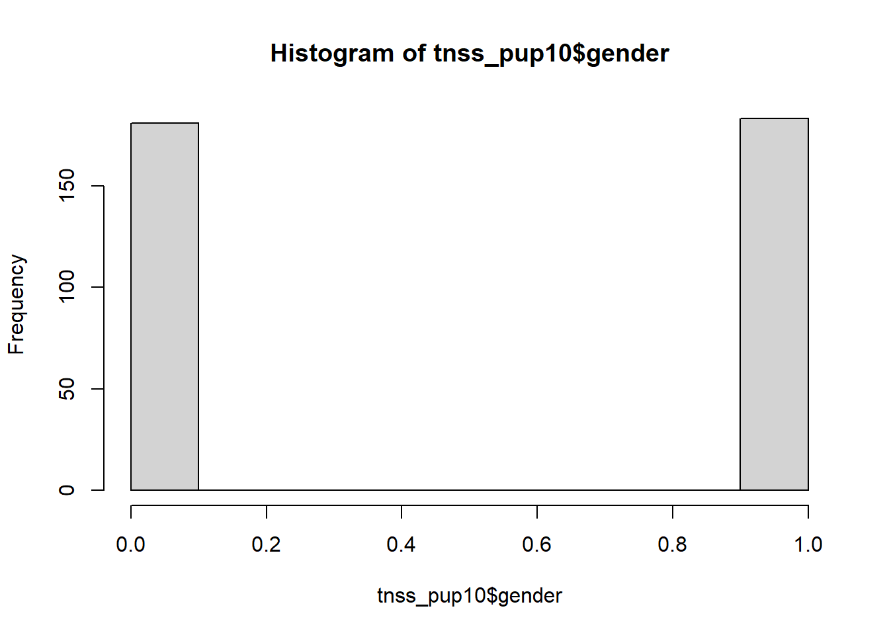
table <- table(tnss_pup10$gender)
prob_table <- table / sum(table)
print(prob_table) # 49.7% boys, 50.3% girls##
## 0 1
## 0.4972527 0.5027473hist(c5$gender)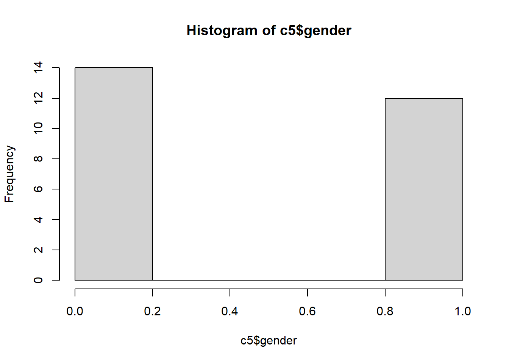
table_c5 <- table(c5$gender)
prob_table_c5 <- table_c5 / sum(table_c5)
print(prob_table_c5) # 53.8% boys, 46.2% girls##
## 0 1
## 0.5384615 0.4615385library(car)
densityPlot(tnss_pup10$ethnicity)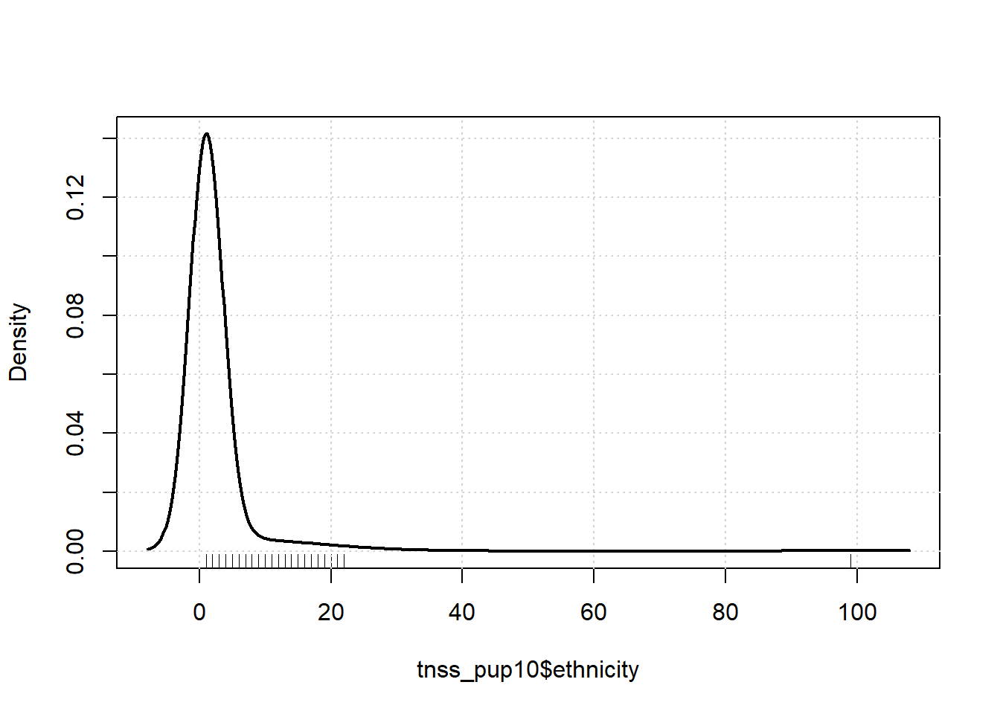
table1 <- table(tnss_pup10$ethnicity)
prob_table1 <- table1 / sum(table1)
print(prob_table1) # 85.7% Dutch, 14.3% from various other backgrounds##
## 1 2 3 4 5 6
## 0.857142857 0.016483516 0.005494505 0.010989011 0.008241758 0.002747253
## 7 8 9 10 11 12
## 0.002747253 0.002747253 0.005494505 0.024725275 0.005494505 0.013736264
## 13 14 15 16 17 18
## 0.008241758 0.002747253 0.002747253 0.002747253 0.002747253 0.002747253
## 19 20 21 22 99
## 0.002747253 0.002747253 0.002747253 0.002747253 0.010989011table1_c5 <- table(c5$ethnicity)
prob_table1_c5 <- table1_c5 / sum(table1_c5)
print(prob_table1_c5) # 73.1% Dutch##
## 1 2 10 12 99
## 0.73076923 0.03846154 0.03846154 0.11538462 0.07692308# behavioral Y (wave 1 and 2)
densityPlot(tnss_pup10$thermo_minority) 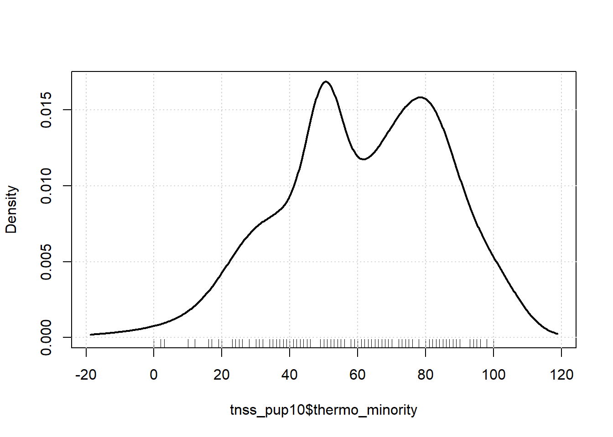
summary(tnss_pup10$thermo_minority) # mean = 61.5 (bit more leaning towards warm), median = 63. Two peaks at 50 and 80, very slightly negatively skewed.## Min. 1st Qu. Median Mean 3rd Qu. Max.
## 0.00 49.75 63.00 61.52 80.00 100.00sd(tnss_pup10$thermo_minority) #23.6## [1] 23.58122densityPlot(behy_pre$thermo_minority) # unimodal, normally distributed and peak is at 50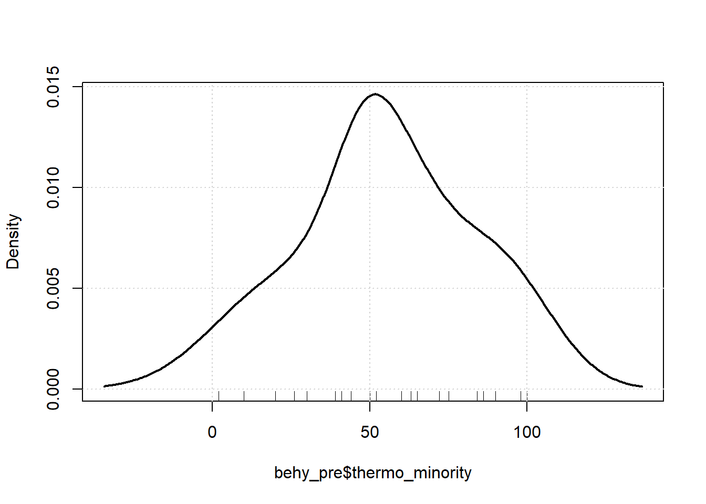
summary(behy_pre$thermo_minority) # mean = 55.1, relatively low for the school## Min. 1st Qu. Median Mean 3rd Qu. Max.
## 2.00 39.50 51.00 55.08 74.25 100.00densityPlot(tnss_pup11$thermo_minority_2) 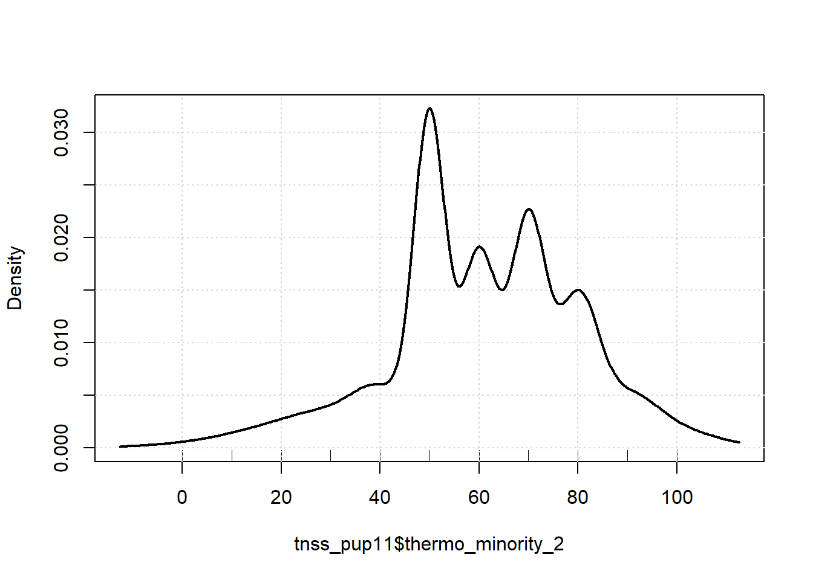
summary(tnss_pup11$thermo_minority_2) # mean = 60.6, median = 60; slightly lower. Distribution in density plot does seem different though. Again seems multimodal, but peak is clearly at 50 (halfway point), slightly negatively skewed.## Min. 1st Qu. Median Mean 3rd Qu. Max. NA's
## 0.00 50.00 60.00 60.57 70.00 100.00 3sd(tnss_pup11$thermo_minority_2) ## [1] NAdensityPlot(behy_pre$thermo_minority_2) # unimodal, normally distributed and peak is at 50. Bit more positively skewed though, somewhat of a peak at 80 as well.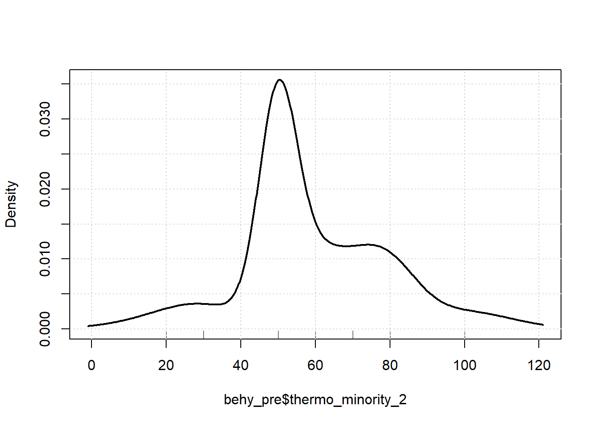
summary(behy_pre$thermo_minority_2) # mean = 59.2, still relatively low for the school, but increase from wave 1 (interesting compared to school average)## Min. 1st Qu. Median Mean 3rd Qu. Max.
## 20.00 50.00 50.00 59.23 70.00 100.00General description of the sample:
The entire TNSS sample consists of 49.7% boys, 50.3% girls, 85.7% Dutch, 14.3% from various other backgrounds. In terms of the behavioral measure, the average level of ethnic minority attitudes is 61.5 in wave 1 and 60.3 in wave 2, indicating neutral to slightly more warm/positive attitudes.
In the specific class that I use for the analyses, these descriptives are similar. Distribution of boys and girls is again quite equal, but relatively a bit more boys (53.8% boys, 46.2% girls). Relative to the school, this class contains more students with migration backgrounds (73.1% Dutch, 26.9% ethnic minorities).
The level of ethnic minority attitudes is interestingly a bit lower in this class compared to the school average (mean in wave 1 = 55.1, and in wave 2 = 59.2). There is also an increase between the two waves, distinct from the school average again.
require(igraph)## Loading required package: igraph## Warning: package 'igraph' was built under R version 4.5.3##
## Attaching package: 'igraph'## The following objects are masked from 'package:lubridate':
##
## %--%, union## The following objects are masked from 'package:dplyr':
##
## as_data_frame, groups, union## The following objects are masked from 'package:purrr':
##
## compose, simplify## The following object is masked from 'package:tidyr':
##
## crossing## The following object is masked from 'package:tibble':
##
## as_data_frame## The following objects are masked from 'package:stats':
##
## decompose, spectrum## The following object is masked from 'package:base':
##
## uniong1 <- graph_from_adjacency_matrix(as.matrix(c5_net))
g2 <- graph_from_adjacency_matrix(as.matrix(c3_net))
vcount(g1) # count vertices / actors #28## [1] 28ecount(g1) # count edges / ties #82## [1] 82is_bipartite(g1) # is the network unimodal or multi? # F## [1] FALSEis_weighted(g1) # F## [1] FALSEgmat <- as_adjacency_matrix(g1, type = "both", sparse = FALSE)
isSymmetric(gmat) # F, dus directed## [1] FALSErequire(RsienaTwoStep)## Loading required package: RsienaTwoStep## Loading required package: foreach##
## Attaching package: 'foreach'## The following objects are masked from 'package:purrr':
##
## accumulate, whents_recip(g1) # 68## [1] 68ts_outAct(g1) # 6724## [1] 6724ts_inAct(g1) # same number## [1] 6724triad_census(g1)## [1] 2146 290 745 2 3 8 17 18 0 0 24 1 1 0 9
## [16] 12dyad_census(g1)## $mut
## [1] 34
##
## $asym
## [1] 14
##
## $null
## [1] 330# $mut = number of pairs with mutual connections #34
# $asym = number of pairs with non-mutual connections #14
# $null = number of pairs with no connections between them #330
# transivitity
igraph::transitivity(g1, type = c("localundirected"), isolates = c("NaN", "zero"))## fr_1 fr_2 fr_3 fr_4 fr_5 fr_6 fr_7 fr_8
## 0.6666667 0.6666667 0.5000000 0.2666667 0.6000000 0.3333333 NaN 0.6666667
## fr_9 fr_10 fr_11 fr_12 fr_13 fr_14 fr_15 fr_16
## 0.5000000 0.3333333 0.6666667 0.3333333 0.3333333 0.5000000 0.2666667 0.1666667
## fr_17 fr_18 fr_19 fr_20 fr_21 fr_22 fr_23 fr_24
## 0.0000000 0.6666667 1.0000000 1.0000000 NaN 0.4000000 1.0000000 0.3333333
## fr_25 fr_26 fr_27 fr_28
## 1.0000000 1.0000000 1.0000000 0.6666667# betweenness
igraph::betweenness(g1, directed = T)## fr_1 fr_2 fr_3 fr_4 fr_5 fr_6 fr_7
## 15.500000 4.000000 41.666667 69.000000 11.000000 2.166667 0.000000
## fr_8 fr_9 fr_10 fr_11 fr_12 fr_13 fr_14
## 3.000000 11.500000 20.000000 0.500000 21.000000 20.000000 68.000000
## fr_15 fr_16 fr_17 fr_18 fr_19 fr_20 fr_21
## 122.166667 17.166667 0.000000 4.500000 0.000000 0.000000 0.000000
## fr_22 fr_23 fr_24 fr_25 fr_26 fr_27 fr_28
## 13.333333 0.000000 24.000000 0.000000 0.000000 2.000000 15.500000# density
igraph::edge_density(g1) # 0.11## [1] 0.1084656General description of the friendship network. Again: note that this is not self nominated data, but by mentors. And also note that I use a one-wave network, so all descriptives concern wave 1 - and I can not make comparisons between the networks at wave 1 and 2.
As seen in the descriptives above, the friendship network in class 5 consists of 28 actors, who in total have 82 ties between them. The network is unimodal (i.e. only one type/level of actors), directed (i.e. directional from one actor to another) and not weighted (i.e. friendship ties are binary: 0-1, instead of continuous scales of more/less friends).
Further, I looked at reciprocity, density, transitivity, and the dyad and triad censuses in the network (@SNASS). There is a total of 68 reciprocated ties, and (based on the dyad census) the number of pairs with mutual connections is 34; number of pairs with non-mutual connections is 14; and finally there are 330 pairs with no ties between them. The level of density in the network is 0.11, which is a relatively low number (as also reflected in the visualizations below). This could have to do with the type of nomination data; as observed by mentors and perhaps not all underlying ties were mapped. In terms of the triad census, the most occuring triad was the 003, or in other words, a triad in which none of the actors have ties between them. Followed by the 102 (one reciprocated tie between two actors) and 012 (one outgoing tie from one actor to another).
Finally, I inspected Moran’s I as an indicator for segregation on the macro level. See below.
# Moran's I
require(RSiena)
library(network)## Warning: package 'network' was built under R version 4.5.3##
## 'network' 1.20.0 (2026-02-06), part of the Statnet Project
## * 'news(package="network")' for changes since last version
## * 'citation("network")' for citation information
## * 'https://statnet.org' for help, support, and other information##
## Attaching package: 'network'## The following objects are masked from 'package:igraph':
##
## %c%, %s%, add.edges, add.vertices, delete.edges, delete.vertices,
## get.edge.attribute, get.edges, get.vertex.attribute, is.bipartite,
## is.directed, list.edge.attributes, list.vertex.attributes,
## set.edge.attribute, set.vertex.attributefriend.data.w1 <- net
friend.data.w2 <- net2
moran_net1 <- network::as.network(friend.data.w1)
moran_net2 <- network::as.network(friend.data.w2)
em_att <- id
class(em_att)## [1] "tbl_df" "tbl" "data.frame"# nacf does not row standardize!
# snam1 <- sna::nacf(moran_net1, em_att[, 1], type = "moran", neighborhood.type = "out", demean = TRUE)
# snam1[2] #the first order matrix is stored in second list-element
require(ape)## Loading required package: ape## Warning: package 'ape' was built under R version 4.5.3##
## Attaching package: 'ape'## The following objects are masked from 'package:igraph':
##
## degree, edges, mst, ring## The following object is masked from 'package:dplyr':
##
## whererequire(sna)## Loading required package: sna## Warning: package 'sna' was built under R version 4.5.3## Loading required package: statnet.common## Warning: package 'statnet.common' was built under R version 4.5.3##
## Attaching package: 'statnet.common'## The following objects are masked from 'package:base':
##
## attr, order, replace## sna: Tools for Social Network Analysis
## Version 2.8 created on 2024-09-07.
## copyright (c) 2005, Carter T. Butts, University of California-Irvine
## For citation information, type citation("sna").
## Type help(package="sna") to get started.##
## Attaching package: 'sna'## The following objects are masked from 'package:ape':
##
## consensus, degree## The following objects are masked from 'package:igraph':
##
## betweenness, bonpow, closeness, components, degree, dyad.census,
## evcent, hierarchy, is.connected, neighborhood, triad.censusgeodistances <- geodist(friend.data.w1, count.paths = TRUE)
geodistances <- geodistances$gdist
# first define a nb based on distance 1.
weights1 <- geodistances == 1
# this function rowstandardizes by default
# ape::Moran.I(em_att[, 1], scaled = FALSE, weight = weights1, na.rm = TRUE)
# observed = -0.21, expected = -0.04, SE = 0.15, p = 0.26Interpretatie Moran’s I: wat is het voor maat, en waarom gebruik ik hem? Heb ik row-standardize gedaan of niet, en waarom?
#kleur op basis van gender. staat in goede volgorde.
V(g1)$color <- ifelse(c5$gender == 1, "red", "green")
plot(g1)## Warning: vertex attribute color contains NAs. Replacing with default value 1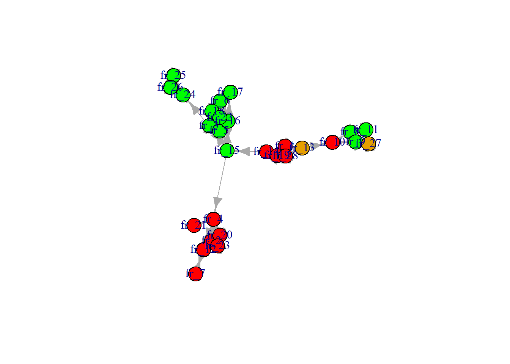
#GENDER AND ETHNICITY OF STUDENTS
layoutfr <- layout_with_fr(g1)
layoutfr[15,1] <- 3
layoutfr[16,1] <- -1
layoutfr[3,1] <- -4
layoutfr[22,1] <- -1
layoutfr[4,1] <- 7
layoutfr[12,1] <- 9
V(g1)$size = igraph::betweenness(g1) * 0.2 + 9
{png("plot1.png", width = 14, height = 7, units = "in", res = 300)
par(mfrow = c(1, 2))
plot(g1,
vertex.color = ifelse(c5$gender == 1, "hotpink", "olivedrab2"),
vertex.frame.color = "gray40",
vertex.frame.width = 2,
vertex.label = NA,
edge.curved = 0.4,
edge.arrow.size = 0.4,
edge.color = "gray50",
layout = layoutfr,
main = "Gender")
legend("bottomleft", c("Girl", "Boy", "Missing"), pch = 21, col = "grey91", pt.bg = c("hotpink", "olivedrab2", "white"), pt.cex = 1.5, cex = 1.2, bty = "n", ncol = 1)
plot(g1,
vertex.color = ifelse(c5$ethnicity == 1, "orange", "skyblue1"),
vertex.frame.color = "gray40",
vertex.frame.width = 2,
vertex.label = NA,
edge.curved = 0.4,
edge.arrow.size = 0.4,
edge.color = "gray50",
layout = layoutfr,
main = "Ethnicity")
legend("bottomleft", c("Dutch", "Non-Dutch", "Missing"), pch = 21, col = "grey91", pt.bg = c("orange", "skyblue1", "white"), pt.cex = 1.5, cex = 1.2, bty = "n", ncol = 1)
dev.off()}## png
## 2# PRIMARY AND SECONDARY OUTGROUP ATTITUDES
# first create a gradient for the attitude thermometers
my_palette_w <- colorRampPalette(c("pink", "deeppink1", "deeppink4"))
attitudew <- c5$thermo_vrouwen
attitudew_color <- my_palette_w(length(attitudew))
my_palette_e <- colorRampPalette(c("lightblue1", "lightslateblue", "darkslateblue"))
attitudee <- c5$thermo_minority
attitudee_color <- my_palette_e(length(attitudee))
# still use size based on betweenness
V(g1)$size = igraph::betweenness(g1) * 0.2 + 9
# now plot as a png image
{png("plot2.png", width = 14, height = 7, units = "in", res = 300)
par(mfrow = c(1, 2))
plot(g1,
vertex.color = attitudew_color,
vertex.frame.color = "gray40",
vertex.frame.width = 2,
vertex.label = NA,
edge.curved = 0.4,
edge.arrow.size = 0.4,
edge.color = "gray50",
layout = layoutfr,
main = "Thermometer scale: Women (girls)")
legend("bottomleft", c("Cold (negative)", "Neutral", "Warm (positive"), pch = 21, col = "grey91", pt.bg = c("pink", "deeppink1", "deeppink4"), pt.cex = 1.5, cex = 1.2, bty = "n", ncol = 1)
plot(g1,
vertex.color = attitudee_color,
vertex.frame.color = "gray40",
vertex.frame.width = 2,
vertex.label = NA,
edge.curved = 0.4,
edge.arrow.size = 0.4,
edge.color = "gray50",
layout = layoutfr,
main = "Thermometer scale: Ethnic minorities")
legend("bottomleft", c("Cold (negative)", "Neutral", "Warm (positive"), pch = 21, col = "grey91", pt.bg = c("lightblue1", "lightslateblue", "darkslateblue"), pt.cex = 1.5, cex = 1.2, bty = "n", ncol = 1)
dev.off()}## png
## 2Figure 1
Gender and ethnicity of TNSS students, wave 1
knitr::include_graphics("plot1.png")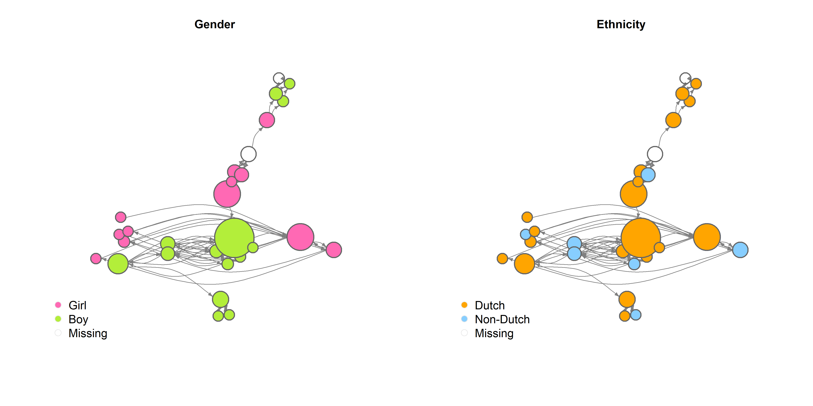
Figure 2
Primary and secondary outgroup attitudes of TNSS students, wave 1
knitr::include_graphics("plot2.png")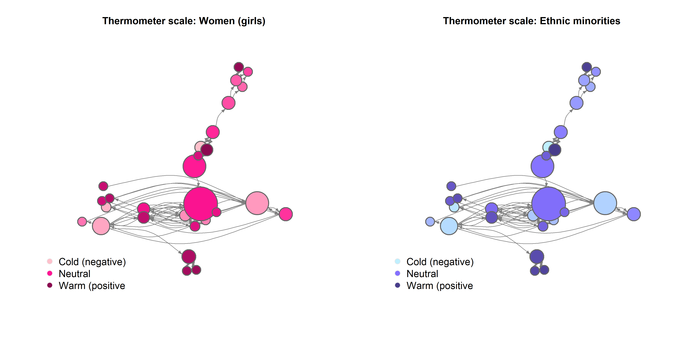
Description of the plots:
Interpretation of the plots:
A lot of clustering! Very distinct friend groups, rather than one connected classroom. Again, note the mentor nomination data.
It seems strongly based on gender
Also to some extent (but less) based on ethnicity
A couple of students with really high levels of betweenness (note size) –> connecting the different clusters; they act as brokers / bridges